Matrici de forma X(a)X(b)
Pentru calculele de genu : X(a)X(b) = X(a+b+2ab)
Cuprins
arrow_drop_down
Cum arata un exercitiu?
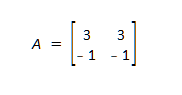
Sa zicem ca avem matricea A de 3,3,-1,-1.
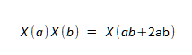
Si ni se cere sa aratam ca X(a) * X(b) este egal cu X(a+b+2ab)
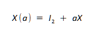
Formula este X(a) = I_2 + aX
In cazu nostru ramane X si a,b dar uneori se pot schimba.
Luam de sus X(a) care deja stim este I_2 + aX , dar avem si X(b) ce il calculam la fel doar ca inlocuim a cu b
Adica X(b) = I_2 + bX
Le inmultim intre cele finca asta ne cere sus : si vom avea parantezele (I_2 + aX) (I_2 + bX)
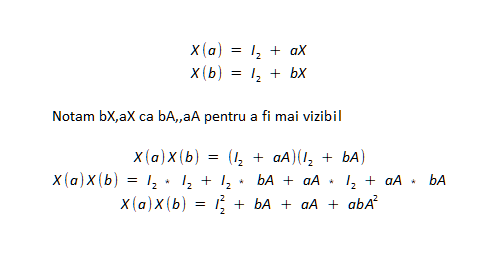
Idea e asa am luam ambele paranteze si leam desfacut.
Cum anume? Am luat fiefieacrecre termen din prima paranteza si am inmultit cu termeni din cea de a doua paranteza , si invers asfel am ramas cu :
X(a)X(b) = I_2^2 + aA + bA + abA
Aici I_2^2 il putem nota ca I_2 finca I_2 * I_2 este I_2.
De ce I_2 dispare cand il inmultim cu aA,bA de sus?
FInca I_2 * orice matrice ne da acea matrice e ca si cum ai inmulti cu 1 un numar , iti va da acelasi numar
Bun acu ce facem avem : I_2 + aA + bA + abA^2
De aici din tot acest carnat urat avem o matrice ce no stim si anume A^2, de ce? finca A il stim este matricea de sus dar A^2 nu stim.
Rezolvam A^2 , A^2 = A * A
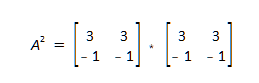
Inmultim matricea A cu ea in sine finca A^2 = A * A
Acu inmultim normal Linie * Coloana (daca nu sti cum se inmultesc matricile 2x2 vezi Calcule cu matrici )
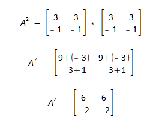
Aici putem vedea ca Matricia A^2 ne rezulta : 6 , 6 , -2 , -2
Acu luam Tr A (umbra matrici A , daca nu sti vezi calcule matrici )
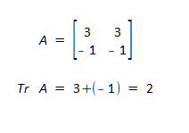
Umbra se ia prin adunarea pe diagonala principala, si anume 3 + (-1) = 2
Acu luam A^2 si il impartim la 2 (Tr A)
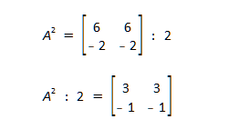
Putem observa ca A^2 : la Tr A ne da A
Acest lucru valideaza calculul nostru.
Cum calculezi mai rapid acest tip de calcule
Se poate calcula mai rapid?
Raspunsul este da, si chiar foarte usor.
Ai nevoie doar sa sti formula X(a) = I_2 + aX
1. Ne uitam la numarul din fata ab, daca nu avem nimic luam 1 , daca in fata lui ab sau numaurui este un semn ex + sau - , numarul il luam cu tot cu semn
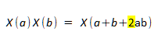
Adica daca avem -ab luam -1 , daca avem +2ab luam 2
Acu ca avem acest numarul , am aflat Tr A , adinca mereu Tr A ne va da acest numar.
2. Inmultim A cu numarul aflat
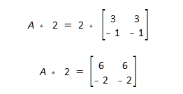
Putem vedea ca A * numarul aflat din fata ab ne da fix cat ar fi A^2, asfel am aflat A^2 din calculul nostru
3. Acu doar inpartim A^2 la numarul aflat adica 2 in cazu nostru.
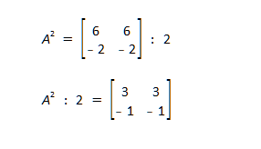
Aici putem observa ca A^2 impartit la tr A ne da A si asfel mai rapid am aratat acelasi lucru.